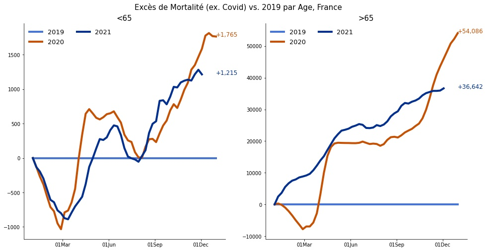
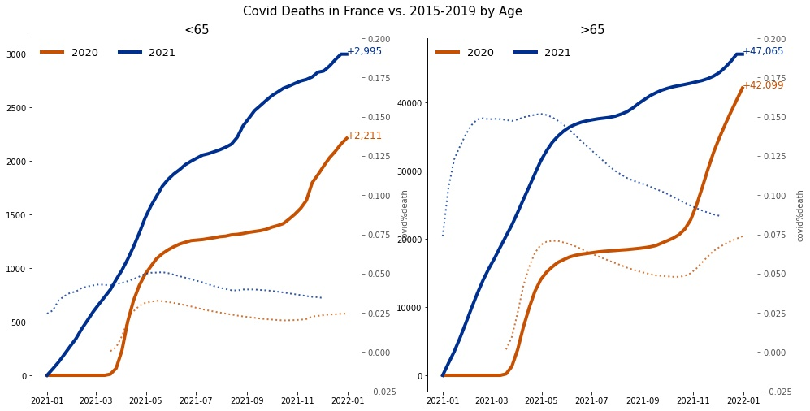
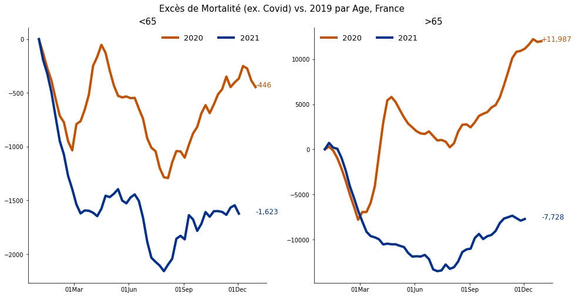

Mortalité de l'INSEE pour les années 2020 et 2021 : les données comptabilisent les décès quotidiens en France
par tranche d'âge.
Source
Les données viennent du site de l'INSEE: insee.fr
.
Les morts Covid par age viennent de Santé Publique France .


